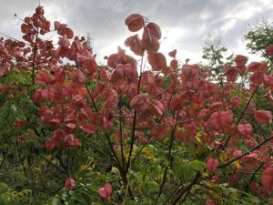
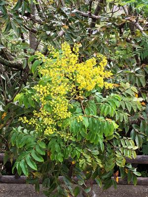
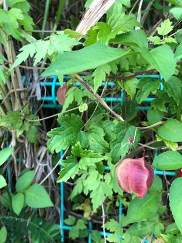
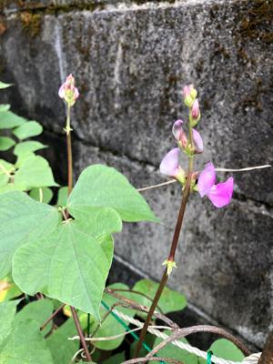

うるがいの話 ある日
最新: 深夜の電話【うるがいの話 ある日】とは 一日だけのプログです
『うるがいの話』の最新一日だけのプログで、通信料が少なく経済的だ。カニの画像をクリックすると全ての日付が載る『うるがいの話』サイトを表示します
|
|
【うるがいの話】 うるがい(ｳﾙｶﾞｲ urugai)とは、『もずくがに』の名前でとても大きくなります。 |
|---|---|
|
|
【カミマヤーの話】 猫のことを方言でマヤーといいます。カミマヤー（kamimayaa）とは、神の猫のことです。 |
|
【たながぁの音楽】 たながぁ（ﾀﾅｶﾞｰ tanagaa）とは手長えびのことで、何種類かあり大きいのは車 エビぐらいになります。 |

|
【ぶながぁの話】 ぶながぁ(ﾌﾞﾅｶﾞｰ bunagaa)とは、赤い髪の毛、赤い身体、そして身長は１ｍ２０ｃｍ ぐらい、川の蟹を食べているの目撃された。場所は沖縄県国頭郡大宜味村のと ある村僕の隣近所に住んでいる爺さんから、聞いた話です。 |
|
|
【ギーマの話】 ギーマ(giima)とは、山原の里山に咲くスズランに似た、 花を付けます。実は食べられます、 気が付くと口の周りが紫になっています。 |
2022年10月18日 (火）深夜の電話
15:29
  
昨夜、やがて零時になる頃、ヨメのお母さんから、ヨメの携帯や家の固定電話
の電話がかかってきた。電話をとっても、無言のまま、心配になりマンション
にでかける。マンションに行くと、ハーなんであんたなんかが・・、と真っ暗
な洗面所から出て来た。迷惑電話を架けたことを、忘れているようだ、ヨメは
そのまま、マンションに泊まることになる。朝、やってられないと家に戻って
きた。体は元気だが、頭のほうがやばくなっている。健康保険証がマイナンバ
ーカードに変わるということで、まだカードを持っていないお母さんの申請書
に利用する証明写真をつくるために、私のスマホでマンションで本人の写真を
撮る。２枚とる、少し遠うめのものとアップのもの、思ったことは『遺影』も
兼ねるかもと。

昨日、歯の治療を終えスッキリしたので歯の様子を見るために、チョコ棒を前
歯で噛んでみた。トホトホ、直したばかりの追加した箇所が欠けた・・・！。
夕方、恥ずかしながら歯医者へ再び行くことになった。
１５時２３分 ビットコインの総資産 ￥８、４３０↑